Description¶
Navika has been developed to analyse on live stream of data as well as it enables the end-user to analyse the historical data also.
In this section it is described various features and functions in the Home page with current date and time. In previous section you learnt how to login.
Let us start with home page through Current date and time. Fig. 10 For the purpose of clarity and ease standard map is used throughout the documentation. The functions and features will remain same. In preceding sections covers each menu and components of the Live map.
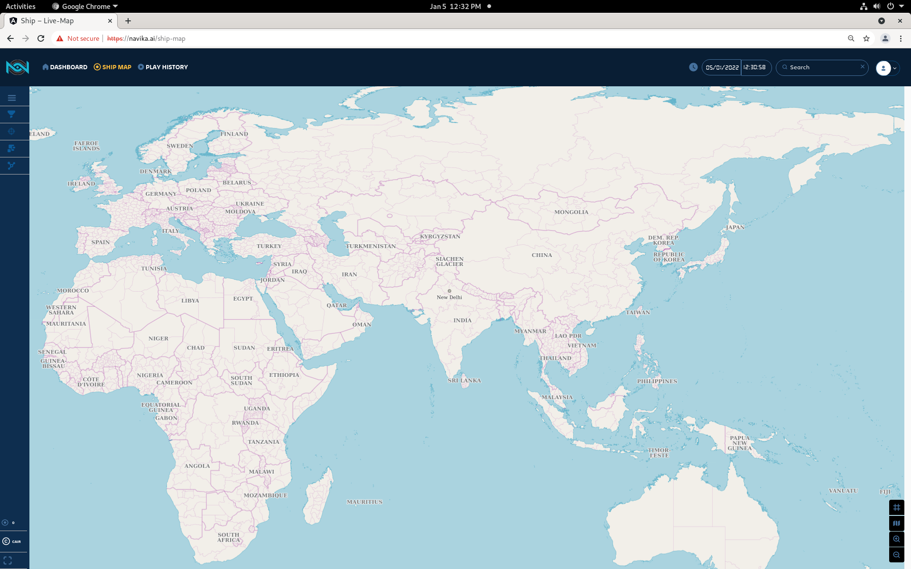Fig. 10 navika home page with current date and time¶
In the Navigation Bar has the following components for you to access the request, change the theme, logout.
- Navigational bar
User profile
Theme
User role
Request Queue
Logout
Search
Plot clock
Set date and time
Play history
Ship Map
Dashboard
In the Fig. 11 you can observe in this dropdown menu your name and role, theme and logout.
If your role is Admin, “Admin” is diplayed, else L1, L2, Analyst Fig. 11 It is for Admin only.
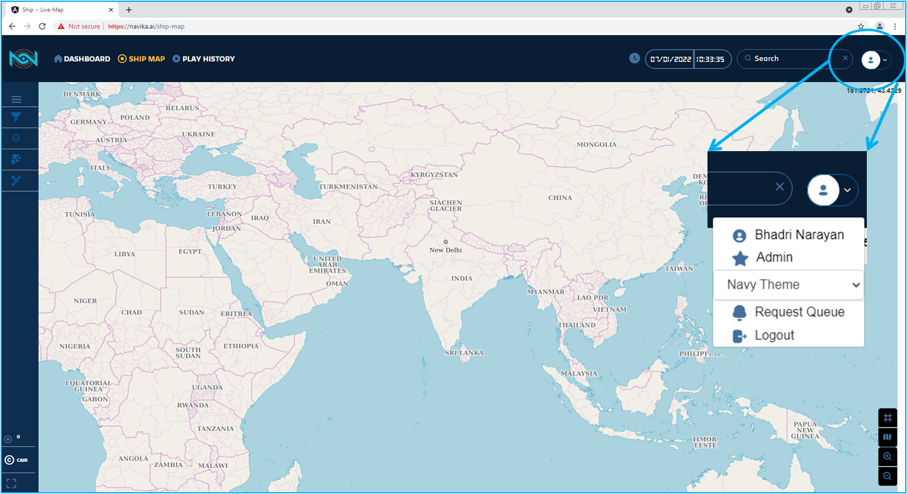Fig. 11 User profile¶
In the Fig. 12 explained the naviagtion bar and its feature briefly.
User profile
Search
Plot clock
Set date and time
Play history
Ship Map
Dashboard
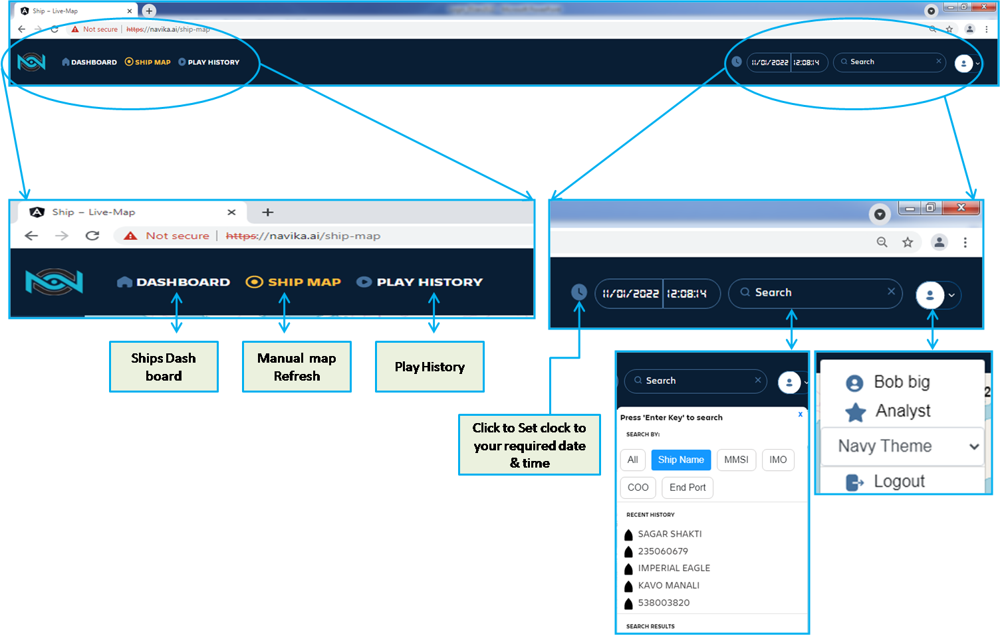Fig. 12 Navigation bar application is set with current date & time¶
The figure Fig. 13, you are logged in with Role L1. This is stored in the user table in the server, where Admin is authorized to approve the new account and provide the assitance during and after user details are modified or forgotten username and password. Kindly refer section Registration section on the account activation and login crdentials.The role of the user has protocol to follow for the access to the certain features in the Navika application.
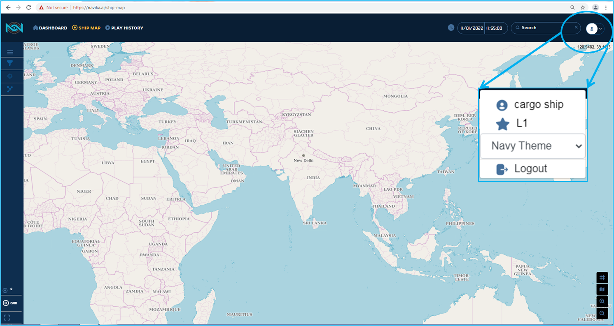Fig. 13 Role L1¶
Subsequently the figure Fig. 14 and the figure Fig. 15 where the user is logged in with their credentials with respect to the roles as indicated in the profile.
You can change the theme of the application in the user profile. In the Fig. 16
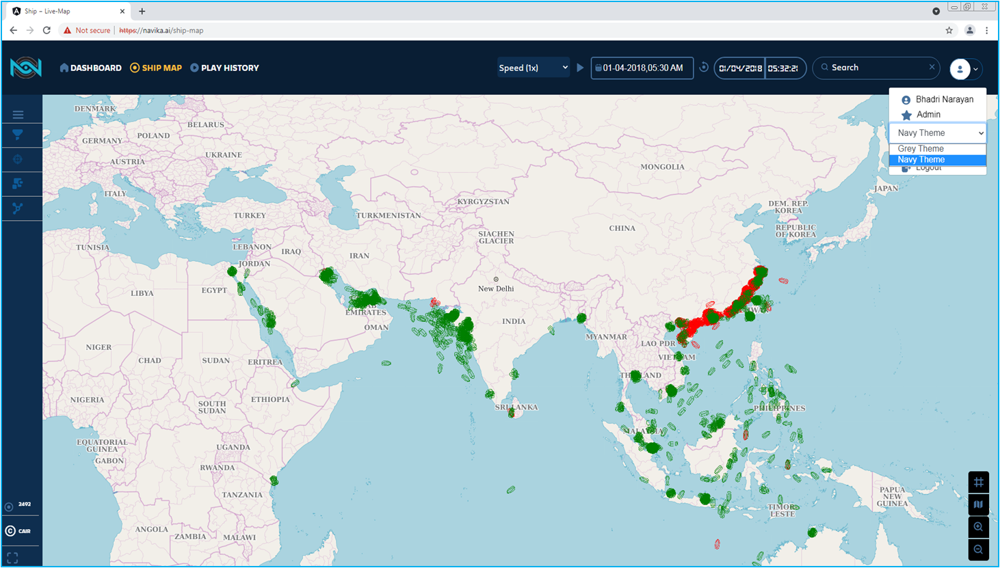Fig. 16 Selection of theme¶
In the Fig. 17 you have selected on navy theme
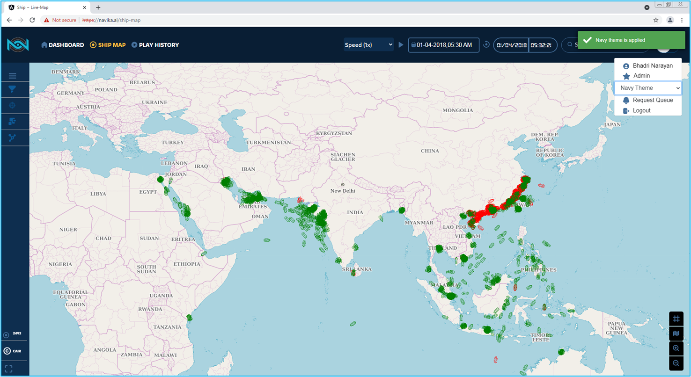Fig. 17 Navy theme¶
In the Fig. 18 you have selected on gray theme
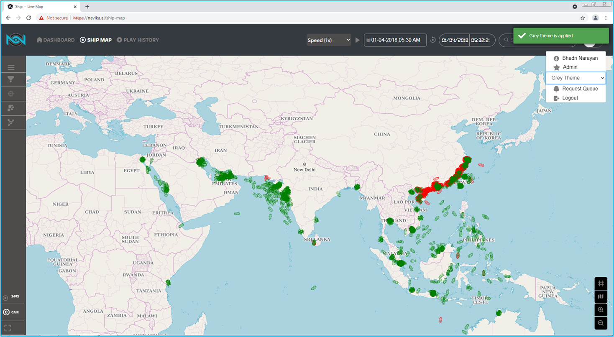Fig. 18 Gray theme¶
Now you are logged into the application, the role as indicated in the previous sections of this manual. See Login page section will be described with all the components associated in the navika home page
Now you are in home page, ships are not plotted in the current date and time. You can adjust date and time by selecting the history date, for example it is 01-Apr-2018 / 05:30:00 is set. Will cover later in this next section. Click on the set adjusted button.
In the Fig. 19 home page without any ships are plotted, due to no data is available in the server for date and time to plot.
- Navigational bar
You have logged in first time, home page is in default current date and time. Below is basic features are accessible.
User profile and Logout
plot clock
Set date and time
Play history
Ship Map
Dashboard
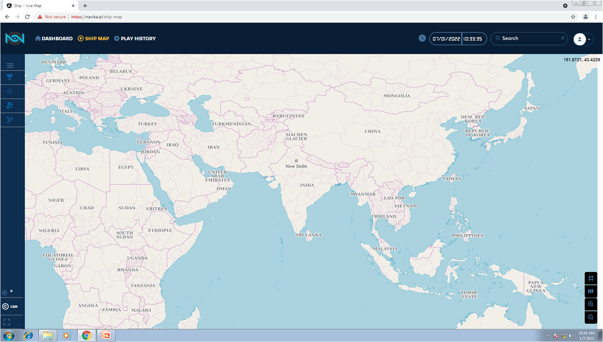Fig. 19 Login with current date¶
In the Fig. 20 navigation bar is with user adjusted date and time. The functions are additon to the current date and time.
You have option to set the date and time by clicking the set date and time button in the navigation bar as indicated in figure Fig. 20
User profile and Logout
plot clock
Set date and time
clock speed set
Play and pause of the set clock
Play history
Ship Map
Dashboard
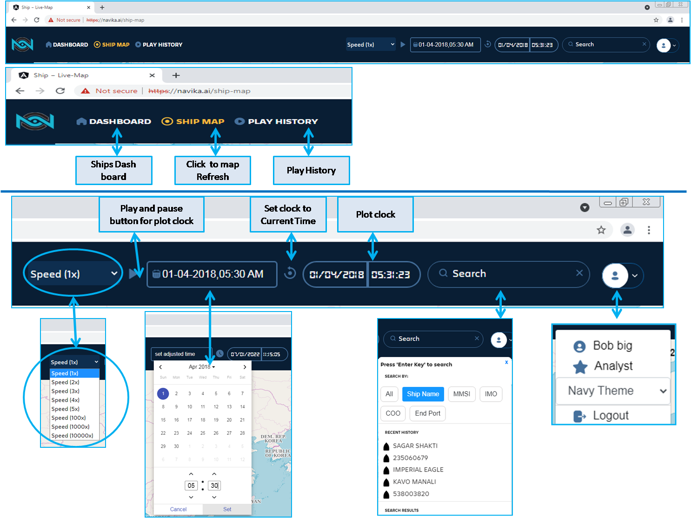Fig. 20 Navigation bar with user adjusted date and time¶
For example, you can set the date and time to 01-Apr-2018 05:30 Hrs, by clicking the adjust date and time, a field will pop-up calendar for user to click and select desired date and click on set button as indicated in the
In the Fig. 21 by clicking on the humberger menu, menu will open. These functions will be covered in section Ships of Interest and others.
- Menu
Vessel Filters
Ships of interest
Region of Interest
Density Map
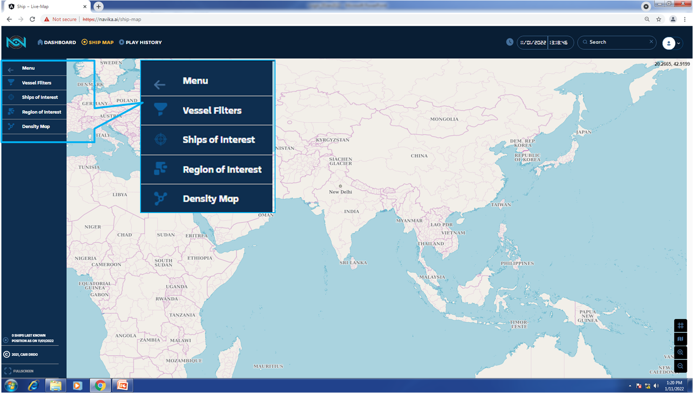Fig. 21 Menu with 4 functions¶
Graticule
In the Fig. 22 Graticule is imaginary lines which globe is drawn, these lines are called Latitude and Longitude;
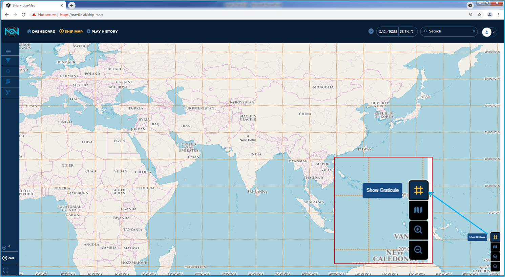Fig. 22 Graticule¶
In the Fig. 23 Latitude for lines drawn from east to west that is parallel to equator of the earth, where as Longitude is drawn from north pole to south pole. Graticule is useful to note the particular ship or location on the globe for the plotted. Regarding LAT/LONG, please refer in the section acronyms.
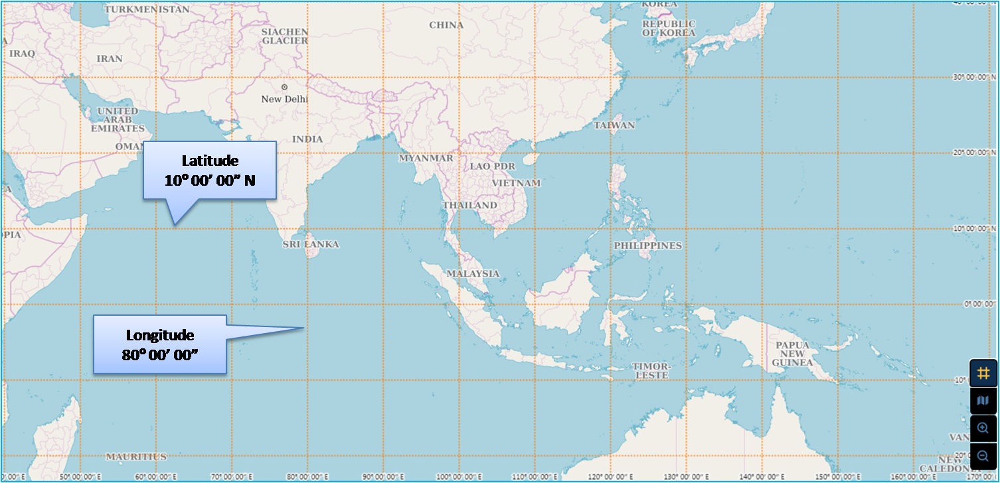Fig. 23 Graticule latitude and longitude¶
- Layers and maps
Map types
- Layers
Ports
- Anchors
Known anchors
Predicted anchors
In the figure Fig. 24 you can choose the maps by click to select subsequently radio button will be highlighted with yellow.

Fig. 24 Maps types¶
In the Fig. 25 is a default map, means once you login to the navika application home page will be in the standard map,
it is political map with international borders and territorial waters
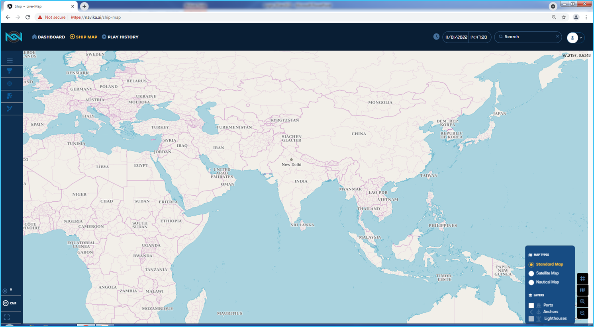Fig. 25 Standard map¶
In the Fig. 26 This map is a basically as name indicates, it is satellite view of the earth with physical features.
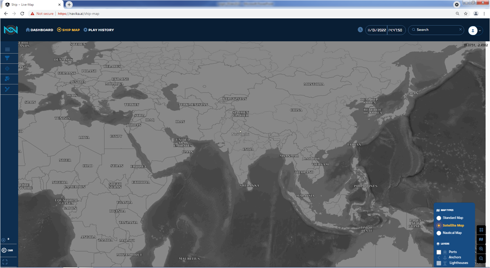Fig. 26 satellite-map-p68.png¶
In the Fig. 27 [ with respect to nautical map it is under development ], the details will be updated on this map type later in the development.
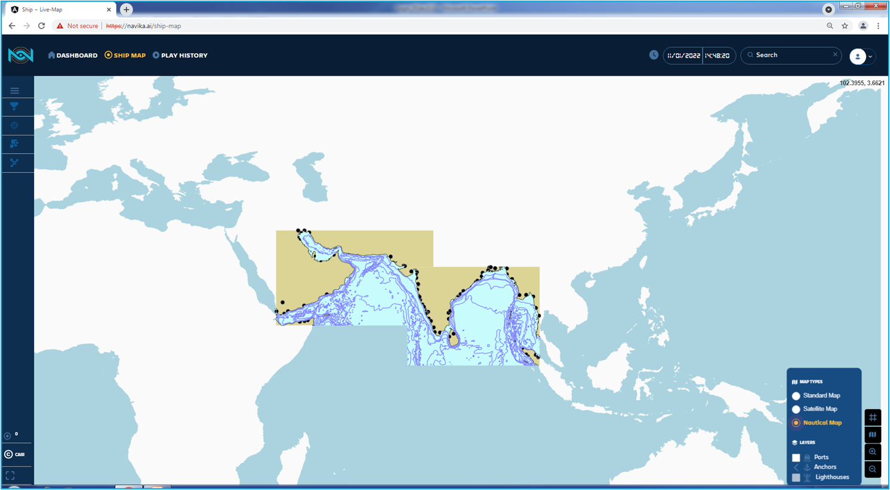Fig. 27 Nautical map¶
- Layers
Ports
Anchors
Known anchors
Predicted anchors
Lighthouse
As we are understanding the Navika application details what are and how to access the data with respect to the ships, so the ships requires the ports as an essential part.
In the Fig. 28 is plotted on the map, when hover he mouse over the any port icon(anchor symbol) in the Fig. 28 there is no ships to get polloted.
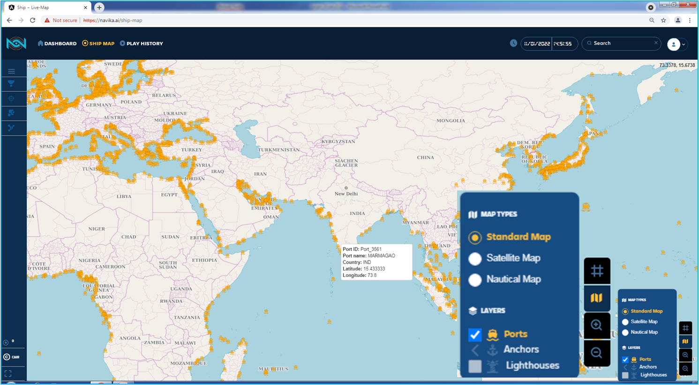Fig. 28 Ports with current Date¶
As you are aware with ports, it for the loading and unloading of the goods, apart from the passengers and other crew and maintenance personal to communte. Anchors are very important for the ships to park until other ships are debark or unload activity. currently we bifircated into two category of Anchors Know and predicted anchors. In the Fig. 29 if you hover the mouse coursor the anchore details with tool tip pop-up will be displayed.
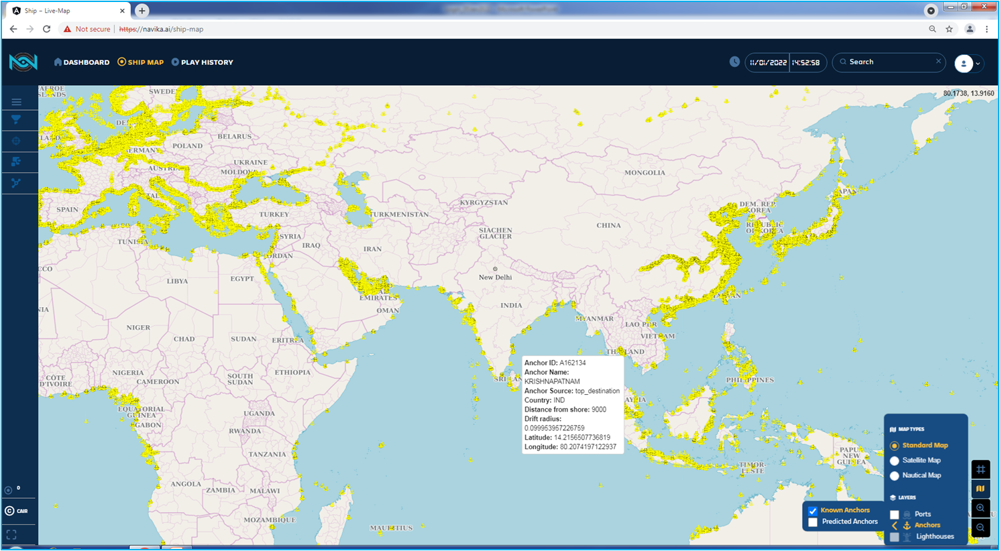Fig. 29 Kown anchors¶
In the Fig. 30 predicted anchors with AI / ML principles, it will be briefed later in this manual about AI/ML, you can hover the mouse cursor over the icon, tool-tip will pop-up with details of ID and status of the anchor will be dislayed.
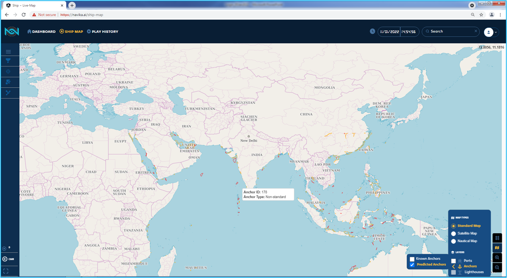Fig. 30 Predicted anchors¶
During the time of documentation the Fig. 31 it is under development, Documentation will be updated once the update version is released.
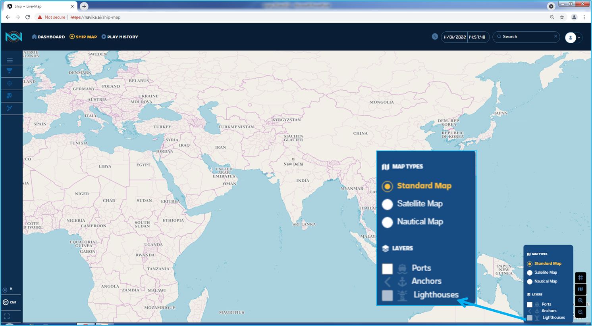Fig. 31 Lighthouse¶
In the home page Fig. 32 indicate the number of ships plotted at the date and time in the plot clock.
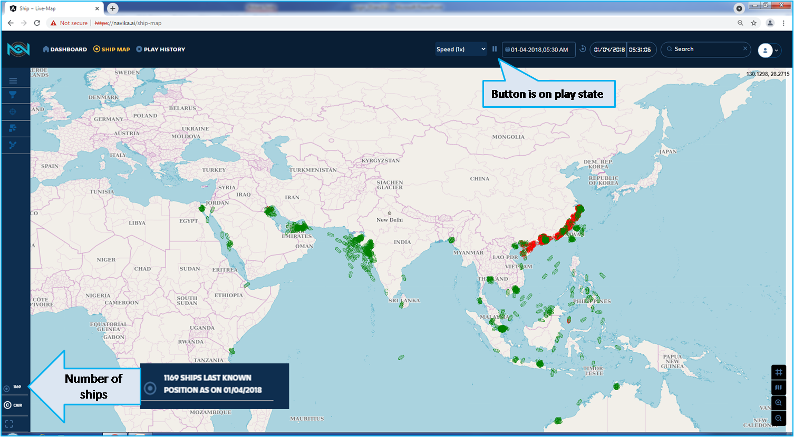Fig. 32 Last Known Positions of ships & number of ships¶
In this Fig. 33 has shown all the functions in the navigation bar to adjust the Date and time.
Until this we are in current date and time, in this scenario, there is no Live data is streaming to plot the ships on the Live map. You can set the date and time, for example it is 01-Apr-2018 / 05:30:00 is set as in the Fig. 34
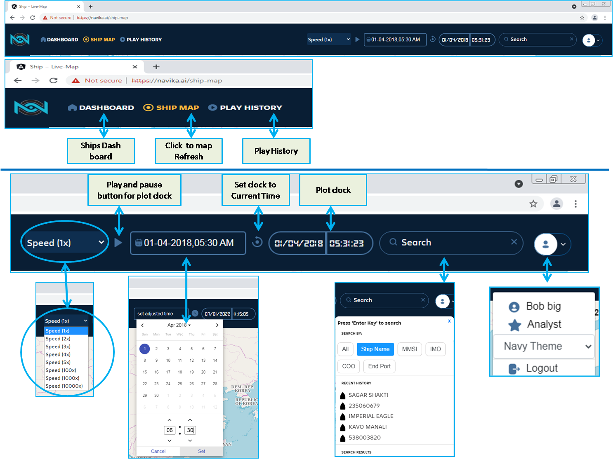Fig. 33 Navigation bar for Adjusting Date and Time¶
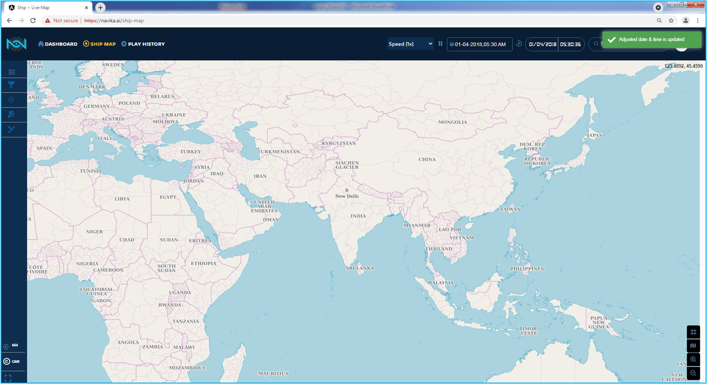Fig. 34 Current time to Adjusted Time plot¶
This section closes here.